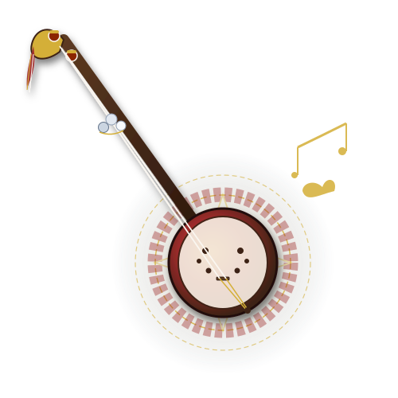

Không gian số hóa, lưu trữ và tôn vinh những làn điệu Sli đối bè mộc mạc của người Nùng cùng những khúc Lượn trữ tình vút cao theo tiếng đàn Tính của người Tày. Nơi kết nối quá khứ với hiện tại qua từng câu hát trao duyên giữa non ngàn Đông Bắc.

Hồn cốt âm nhạc Tày – Nùng: Cần gỗ dâu thon dài, bầu bí già phơi khói và hai dây tơ ngân nga vạn dặm.
Nếu Sli của người Nùng là nghệ thuật hát bè mộc mạc, đa thanh đầy nội lực giữa vách đá thung lũng, thì Lượn của người Tày lại là khúc tự tình trau chuốt, đằm thắm bên phím đàn Tính tẩu ngân rung.
Hát Sli là viên ngọc quý trong kho tàng văn nghệ dân gian Việt Nam. Điểm đặc sắc nhất của Sli là lối hát đối đáp nhiều bè tự nhiên không cần bất kỳ nhạc cụ nào đệm theo.
Lượn là đỉnh cao trữ tình đối đáp của người Tày, được gieo vần nghiêm cẩn theo thể thơ 7 chữ hoặc 5 chữ (vần trắc, vần bằng kết hợp giữa vần chân và vần lưng).
Nhấp chuột vào từng dây hoặc nhấn phím số 1 - 6 trên bàn phím để lắng nghe âm vang ngũ cung của quả bầu già và dây tơ truyền thống!
Những kiệt tác dân ca được lưu truyền qua nhiều thế hệ đồng bào Tày – Nùng, thấm đượm triết lý nhân sinh và tình yêu quê hương đất nước.
Tra cứu, tìm hiểu lời ca trọn vẹn với 3 cột độc lập: Tiếng dân tộc nguyên bản, Phiên âm tiếng Việt và Bản dịch nghĩa tiếng Việt, kèm đầy đủ thông tin nguồn gốc, nghệ nhân và địa phương lưu truyền.
Nghe trực tiếp các làn điệu Sli Giang, Sli Sình Làng, Lượn Slương, Lượn Cọi và tiếng đàn Tính tẩu. Hỗ trợ trình phát đa năng: tạm dừng, tua lại, điều chỉnh âm lượng, hiển thị sóng âm sống động.
Khám phá không gian văn hóa, bối cảnh tâm linh, nghi thức hôn nhân và trình tự 6 chặng của một cuộc hát đối đáp chuẩn mực của người Tày – Nùng từ chiều hôm trước đến bình minh hôm sau.
Giải nghĩa những khái niệm, tên gọi làn điệu và các phong tục cổ truyền đặc sắc trong không gian văn hóa dân ca Đông Bắc.
Mỗi vùng đất mang một sắc thái âm nhạc riêng biệt: không khẳng định mọi địa phương đều có cùng một cách hát, mà tôn trọng sự đa dạng tinh tế về tiết tấu, lối nhả chữ và phong tục của từng cộng đồng.
Nhấp chuột vào một địa phương trên sơ đồ để khám phá ngay làn điệu và câu chuyện nguồn cội
Dự án “THANH ÂM SLI – LƯỢN | DI SẢN DÂN CA TÀY NÙNG” được khởi xướng với mục tiêu xây dựng một không gian số mở, lưu giữ nguyên vẹn lời ca cổ, hệ thống ký âm và các bản thu âm điền dã quý giá của đồng bào Tày và Nùng.
Trước nguy cơ mai một của các hình thức hát truyền thống trong nhịp sống hiện đại, website đóng vai trò như một cầu nối số, giúp thế hệ trẻ dễ dàng tiếp cận, học hỏi, trân quý và cùng chung tay tiếp nối ngọn lửa di sản mà cha ông đã truyền qua bao đời.
Giữ nguyên lời ca tiếng dân tộc, không cải biên làm biến dạng ý nghĩa nguyên bản.
Mỗi tư liệu đều ghi danh nghệ nhân truyền khẩu, người sưu tầm và cơ quan lưu trữ.
Bạn có bản ghi âm điền dã, lời ca Sli – Lượn của quê hương hoặc những câu chuyện dân gian chưa được số hóa? Hãy chia sẻ cùng chúng tôi để làm giàu thêm kho tàng văn hóa chung của dân tộc.